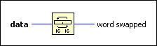

Swap Words Function
Owning Palette: Data Manipulation Functions
Requires: Base Development System
Swaps the high-order 16 bits and the low-order 16 bits for every long integer in data.
For example, if the input in hexadecimal format is 1234567890ABCDEF, this function swaps 1234 with 5678 and 90AB with CDEF, returning 56781234CDEF90AB. The connector pane displays the default data types for this polymorphic function.

 Add to the block diagram Add to the block diagram |
 Find on the palette Find on the palette |